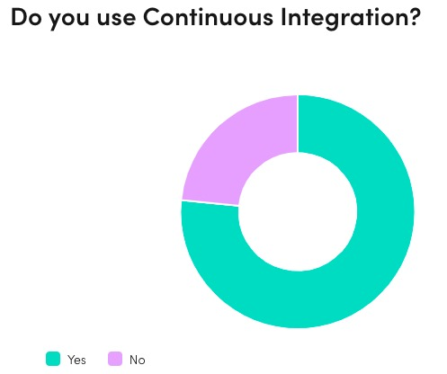
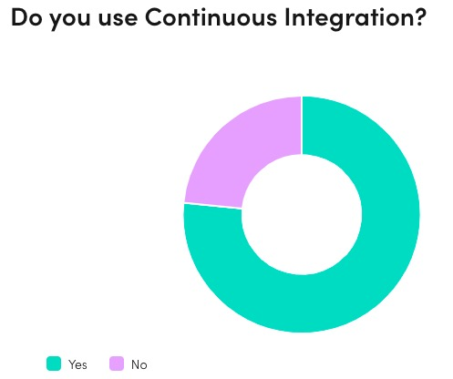

概述
作者对来源于世界各地的 4500 位前端开发进行了问卷调查。根据采集到的数据进行了一系列有趣的图表统计。
报告分 11 个章节，分别邀请了相关权威的技术人士根据调查结果进行分析，并运用他们令人钦佩的专业知识和大局观进行了总结。
本想完整翻译这份报告，但是发现 github 上已经有团队在讨论翻译中。这里，我主要就报告核心内容进行一些精炼和总结，外加那些有趣的图表。
开发者（developers）
大多数参与调查的开发者都是从事前端开发 3 年以上的 高级+ 前端。

框架（Frameworks）
现状：
React 绝对王者。有 74.2% 的调查对象在使用 React ，超过 Angular 和 Vue 用户的总和。
大家对 Angular 的相对兴趣有所下降，对 Vue 的兴趣增长也有些停滞。更新较慢是部分原因。
有趣的一点是：jQuery 虽然很少被提及，但它仍然是网络上部署最广泛的 JavaScript 库。
在状态管理方面，使用 React Context API 和 hooks（49.6%）的人比使用 Redux （48.2%）的人更多。
趋势：
新一代响应式框架（Reactive Frameworks）快速崛起, 或将成为 React 生态的可替代品。这和 TypeScript 的流行也有很大关系。
大家对新一代响应式框架也产生了浓厚的兴趣，比如 Svelte ，它致力于在普通 DOM 结构之上提供响应式。
另一个竞争者是 Stencil.js, 一个专注于网络组件（web component）的框架，和 Svelte 一样，专注于高效的编译。
多数人更喜欢 TypeScript，77.2% 的受访者已经在使用 TypeScript 。因此，很多现有框架正在改善对 TypeScript 的支持，而且许多框架开始在内部使用 TypeScript。
一点争议：目前，新一代框架可能非常适合小型应用，但在构建大型应用时需要更多的工作。的确，因为它们没有像框架那样需要支持过去几年的功能的遗留问题，所以默认的包很小。但是，它们也非常符合现代标准和语言特性。
托管（Hosting）
44.3% 的受访者仍在将他们的应用部署到自己的 Web 服务器上。这提醒我们，传统DC仍有巨大的市场，公有云仍有很多发展机会。
在云服务提供商中，亚马逊云计算服务 AWS（Amazon Web Services）最受欢迎（38.7%）。
Netlify 拥有很高的渗透率 (23.3%)，高于 GCP（Google Cloud Platform） 和 Microsoft Azure。这是其自身优质能力的体现。
前端开发的未来需要 Netlify 和 Vercel 这样的平台，它们专注于为前端团队提供易于使用且功能强大的后端基础设施的抽象。自成一派，并不断成长。
 

JAMstack
近1/3的受访者最近建立了一个 Jamstack（JavaScript、API、Markup）网站。另外，让我个人感到高兴的是，其中超过一半的人使用了 Next.js –我们在 Vercel 为 Jamstack 创建的 React 框架。预计在接下来的几个月里，建设 Jamstack 网站的前端开发者的比例会更大。
对我来说，Jamstack 的魅力在于它让我们做得更少，完成得更多。有了 Jamstack ，你不需要在每次请求时渲染一个页面（SSR服务器端渲染），而是在请求时间之前预渲染一个页面（静态生成）。这可以被 CDN 上的所有边缘节点共享，以获得最佳性能、更高的可用性、更低的成本和零维护开销。
此外，Jamstack 框架也在不断发展，超越静态，采用动态的灵活性。例如，Next.js 允许你在生产构建后静态生成额外的页面或重新生成现有的页面（增量静态生成）。即使你的应用程序有数百万个页面，初始构建也会立即完成，因为这些页面可以增量生成。
可重用的 API（Jamstack中的 "A"）也在崛起。现在市场上有很多无头内容管理系统 （Handless CMS）、无头电商(headless e-commerce)、无头身份(headless identity) 等供应商。难怪框架也在随着这些趋势发展。经验之谈: Next.js 有预览模式功能，当你在 Handless CMS 上预览页面时，可以有条件地绕过静态生成。
受访者正在使用各种各样的 Jamstack 解决方案，正在尝试不同的想法。这也推动了Jamstack社区的发展，使其成为一个更简单、更高性能的网络。
Edge CDN的Anycast网络可以缓存边缘的静态内容，通过尽可能接近访问者的资源来减少延迟，从而提高用户访问速度。
Handless CMS:Handless content management system,是一种没有前端组件的系统，内容可以通过API发布到任何地放的方式展示给最终用户。
微前端（Micro frontends）
已经有 1/4 的前端开发开始构建自己的微前端项目。
网络组件（Web component）是很好的，入门级的 微前端 解决方案。
有不少新的微前端框架，既支持后端渲染又具备前端构造（比如Holocron, Podium,Ara Framework。这些框架是对微前端社区的巨大补充，但切记谨慎挑选–始终要契合你的应用环境。
只有20%的调查者认为微前端可能会在未来三年内消失。Luca Mezzalira认为，微前端现在还处于早期，有很多经验教训需要学习，但他相信微前端会不断发展并达到成熟–就像微服务一样。
TC39/Realms提案已经进入stage 2阶段, Luca Mezzalira认为这将为微前端打开新的局面。
微前端并不是万能的，但绝对是对其他架构（比如 SSR、JamStack 和 SPA ）的一个很好的补充。 只要在合适的场景应用，将事半功倍。
Luca Mezzalira:DAZN架构副总裁,"Building Micro-Frontends"作者。
TC39是Ecma International标准化组织旗下的技术委员会的一员，它负责管理ECMAScript语言和标准化API。
Realms提案提供了一种新的机制，用于在一个新的全局对象和一组JavaScript内置的上下文中执行JavaScript代码。
SEO
搜索引擎优化（Search Engine Optimization）- SEO 对任何在线业务都至关重要。
高达 52% 的调查者并不关心 SEO ，可能许多调查者开发的是受密码权限控制的应用。
做好 SEO ，首先应该确保搜索引擎能够正确地在你的网站上渲染 JavaScript。不小心在 robots.txt 中屏蔽了一些脚本，或者使用了搜索引擎抓取工具（比如 Googlebot 百度蜘蛛）不支持的 JavaScript 功能，都会影响 SEO。
渲染只是 SEO 众多方面中的一个。你必须把注意力放在使用正确的 HTML 标签和设计一个合理的网站结构上。就像你在服务器端渲染、客户端渲染和动态渲染之间选择一样。关键是要理解搜索引擎的工作原理。
robots.txt是一个协议，而不是一个命令。robots.txt是搜索引擎中访问网站的时候要查看的第一个文件。robots.txt文件告诉蜘蛛程序在服务器上什么文件是可以被查看的。建议当您的网站包含不希望被搜索引擎收录的内容时，才需要使用robots.txt文件。如果希望搜索引擎收录网站上所有内容，请勿建立robots.txt文件。
应用程序可访问性（Application accessibility）
这是一个关乎用户体验的话题，对于非常接近用户的前端开发来说，是非常重要的。
作为前端开发人员，我们经常是这项工作流中最后一个提升可访问性的人。要摆脱这种模式，我们需要转变思维。我们必须努力成为同行的好老师，做好规范，榜样，保证可访问性不会取决于我们开发者的时候，网站才能为每个人服务。
关心无障碍的开发人员似乎大多数都熟悉《web内容无障碍指南》（WCAG）的基础。在未来，我们也应该尝试了解有多少人测试无障碍性。现在自动测试无障碍性的工具越来越多。
开发团队
92% 的受访者表示他们在过去一年中曾作为开发团队的一员工作过。
前端架构和部署基础设施的最新趋势已经影响了前端开发人员与团队成员协作的方式。
随着新的前端架构(如 Jamstack )的兴起，前端开发人员可以独立于后端部署前端。他们不再需要等待完整的后端测试套件的运行，从而导致更快的迭代。
现成的后端 API ( 如 headless CMS、IDP 等) 越来越多，可以很容易地插入到你的前端。这使得后端开发人员能够更加专注于开发业务特有的 API。
我们开始与设计师和产品负责人更多的打交道。因为 Jamstack 应用程序可以快速、廉价地部署到 CDN edge 上，所以可以为每个分支和每个提交分配一个唯一的“预览” URL。我们已经在 Vercel 做到了这一点——现在，设计人员和产品所有者只需点击预览 URL，就可以立即查看前端开发人员所做的更改是否符合预期。这比分享截图和 gif 更有效。
最后看软件测试。随着 puppeteer 的引入，Chrome 的无头 web 浏览器，结合无服务器计算，端到端测试变的快速和廉价。例如，您可以让运行 Checkly + puppeteer 测试案例(由QA专家编写) 这样的服务和预览 URL 对应起来。此外，随着 Vercel 和其他前端部署平台的崛起，DevOps 工程师可以花更少的时间来支持前端开发人员。
IDP: (identity provider）身份提供者，是一个系统组件，它能够向终端用户或连接到互联网的设备提供一组登录凭据，以确保实体是谁或它所说的是什么，跨越多个平台、应用程序和网络。例如，当第三方网站提示终端用户使用微信帐户登录时，微信登录就是身份提供者。
Puppeteer: 一个控制headless Chrome的Node.js API。它是一个Node.js库，通过DevTools协议提供了一个高级的API来控制headless Chrome。
Checkly是一款验证API端点正确性和浏览器点击流的监控工具。Checkly可以使用Puppeteer框架进行自动化浏览器操作。
设计
让设计师与开发者紧密合作不再是一种时尚，而是一种标准。我们已经有了非常好的工具让这种合作变得更好。
软件开发公司有两种设计人员——以用户为中心的UX/UI设计人员和以业务为中心的产品设计人员——已经成为一种标准。
随着产品设计师的加入，软件公司越来越多地关注于创建与客户业务目标相匹配的战略和产品。
产品设计师的出现这意味着，作为软件公司，我们越来越多地关注客户的真实需求，致力于创建与他们的业务目标相匹配的战略和产品。
为了使这种合作富有成效，我们需要更好的工具，比如 Figma, InVision, Sketch和Zeplin。71.7%的开发团队已经使用了这类工具。
质量保证
如今，越来越多的数字产品的功能是在客户端实现的。这使得软件工程师和QA专家必须将测试作为开发、维护和扩展JavaScript应用程序的工作流程的一部分。可喜的是，80%的前端开发者已经开始进行软件测试，而且这一数字在过去几年里还在不断增长。
软件测试与现代前端开发是密不可分的。
软件测试是对数字产品稳定性的必要投资，最终提高了我们整个工作流程的生产力。我们相信Capybara、RSpec、Ember CLI和QUnit等工具可以进行单元测试、集成测试和端到端测试。当然，还有更多的解决方案供你选择。
在.cult，我们相信测试工具生态系统的持续增长将很快允许我们通过自动化覆盖产品开发工作流的更大一部分。
前端未来趋势
我们对调查结果和最近前端web开发的变化无不惊讶。所以预测前端的未来不是一件容易的事。
然而，在前端开发社区，爱与恨之间的界限很窄。一两年前，Redux是配合React进行状态管理的普遍选择。但前端开发人员现在厌倦了Redux 所带来的问题，并迅速加入 React hooks 的行列。现在使用 hooks 的用户已经超过了 Redux ，有 34% 的前端开发者认为 Redux 将在 3 年后消失。
同时，前端开发的世界也变得越来越复杂。同样，一两年前，像持续集成和容器化这样的解决方案更多地被认为是后端事物。前端开发人员现在意识到，他们也可以从这些解决方案中受益。现在，77% 的前端开发者使用 CI , 62% 使用容器。它们已经成为前端开发的新标准。
那么，在接下来的 12 个月里，前端会发生怎样的变化呢? Svelte 会成为3个最流行的框架之一吗? 微前端会成熟吗? 没有人能确定，但在我看来，有一件事是确定的: 我们会对一些变化的发生速度感到惊讶。让我们期待《2021年前沿状态》报告。
原文&拓展文档
报告原文
Netlity官网
Jamstack网
[GatsbyJs中文网] (https://www.gatsbyjs.cn/)
WCAG